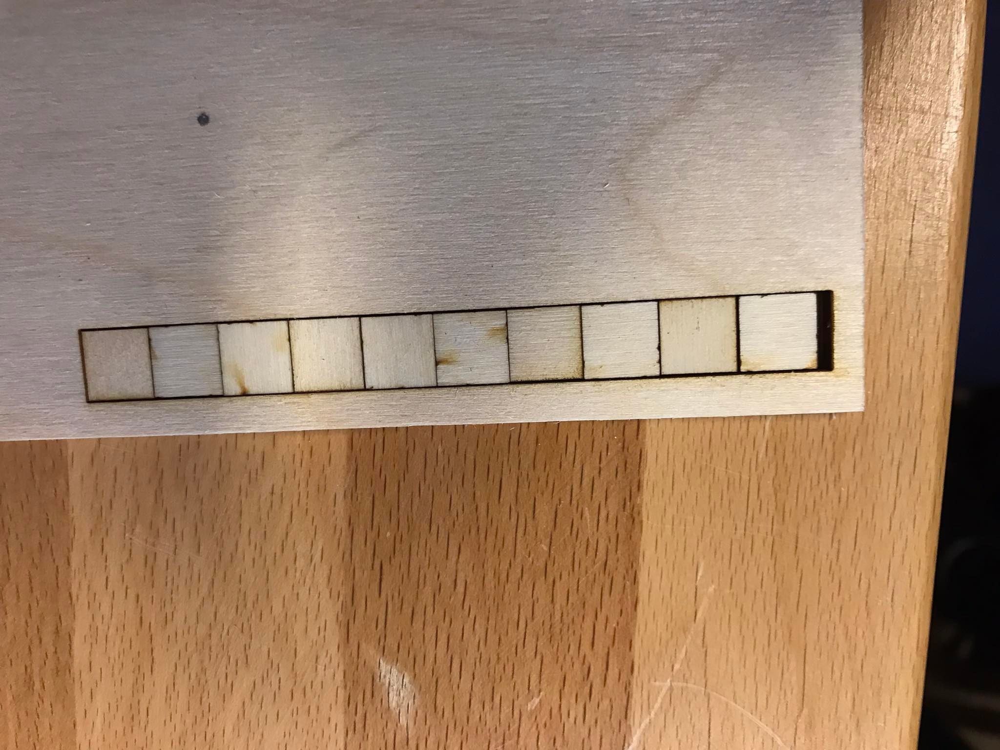

KERF test
KERF test
Project description
A part of project 2 was a group project to determine the KERF for the laser cutter
Me and Sæmundur did this KERF test together
What is KERF
KERF is how much of the material is removed when making the cut, in our project a laser cut. When you think about a wheel saw and a blade and you make a cut from a marking, the marking disappears. The material that's removed with the cut is called KERF. Since the margin of error is really small when working with a pressfit model it's important to account for the KERF. The laser cutter cuts along a line we draw and because of KERF we need to offset that line by some constant. When that constant is known it's easy to account for in FUSION360 under the manufacture tab.How do we test it
We started by drawing a rectangle that is 100x10 mm and divide it into 10 smaller units, each 10x10 mm. Then we move that file into Inkscape and put it in the lser cutter.
We chose a 4mm plywood plate and moved the squares we had just cut as well as the plate and measured the difference between the length. We knew the original rectangle was 100mm wide
so by measuring the length of those rectangle, subtracting that length from the original 100mm and divind by the amount of cuts, 11 in our case we can found out the width of the material taken out with each cut
i.e. the KERF.

We measured the KERF as 0,182 mm which is around the same value other students got.
We used 0,18mm as our KERF when cutting in project 2 with good results